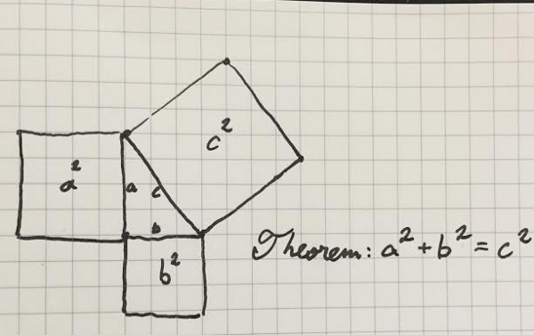
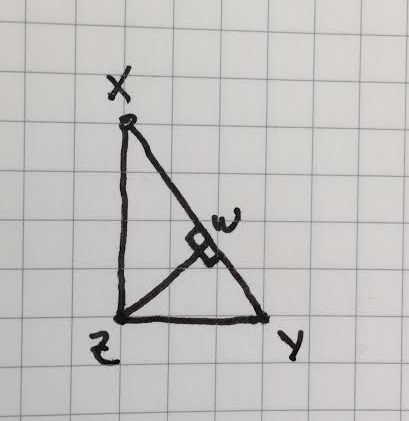
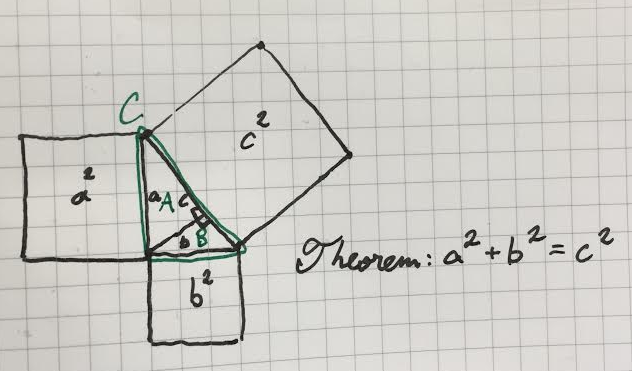

Доказательство
К доказательству теоремы Пифагора
Здесь \(a\) и \(b\) — катеты, а \(c\) — гипотенуза:
Сначала рассмотрим одну лемму — доказанное утверждение, которое полезно не само по себе, а для доказательства других утверждений (теорем).
Возьмем прямоугольный треугольник с вершинами \(X\), \(Y\) и \(Z\), где \(Z\) — прямой угол и опустим перпендикуляр с прямого угла \(Z\) на гипотенузу. Здесь \(W\) — точка, в которой высота пересекается с гипотенузой.
Эта линия (перпендикуляр) \(ZW\) разбивает треугольник на подобные копии самого себя.
Подобными называются треугольники, углы у которых соответственно равны, а стороны одного треугольника пропорциональны сходственным сторонам другого треугольника.
В нашем примере образовавшиеся треугольники \(XWZ\) и \(YWZ\) подобны друг другу и также подобны исходному треугольнику \(XYZ\).
Вернемся к теореме Пифагора.
Доказательство:
Опустим перпендикуляр на гипотенузу \(c\). В результате у нас образовались два прямогульных треугольника внутри нашего прямоугольного треугольника. Обозначим эти треугольники (на картинке вверху зеленым цветом) буквами \(A\) и \(B\), а исходный треугольник — буквой \(C\).
Разумеется, площадь треугольника \(C\) равна сумме площадей треугольников \(A\) и \(B\).
Т.е. \( A + B = C \)
Теперь разобьем фигуру вверху на три фигурки-домика:
.png)
Как мы уже знаем из леммы, треугольники \( A \), \( B \) и \( C \) подобны друг другу, поэтому и образовавшиеся фигурки-домики также подобны и являются масштабированными версиями друг друга.
Это означает, что соотношение площадей \(A\) и \(a^2\), — это то же самое, что отношение площадей \(B\) и \(b^2\), а также \(C\) и \(c^2\).
Таким образом, мы имеем \({A \over a^2} = {B \over b^2} = {C \over c^2}\).
Обозначим это соотношение площадей треугольника и квадрата в фигуре-домике буквой \(k\).
Т.е. \(k\) — это некий коэффициент, связывающий площадь треугольника (крыши домика) с площадью квадрата под ним:
\(k = {A \over a^2} = {B \over b^2} = {C \over c^2}\)
Из этого следует, что площади треугольников можно выразить через площади квадратов под ними таким образом:
\(A = ka^2\), \(B = kb^2\), и \(C = kc^2\)
Но, мы помним, что \(A + B = C\), а значит, \(ka^2 + kb^2 = kc^2\)
Или \(a^2 + b^2 = c^2\)